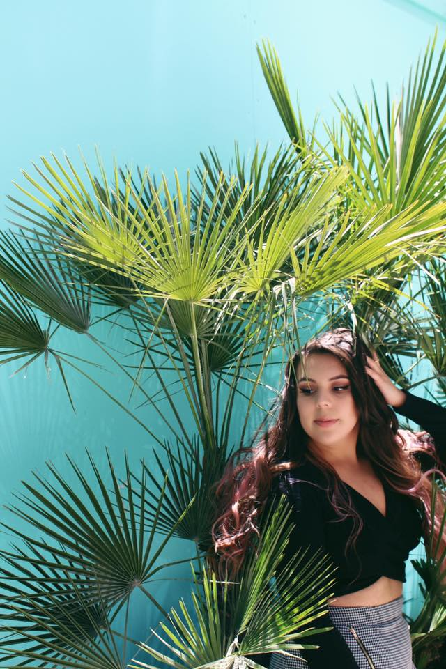
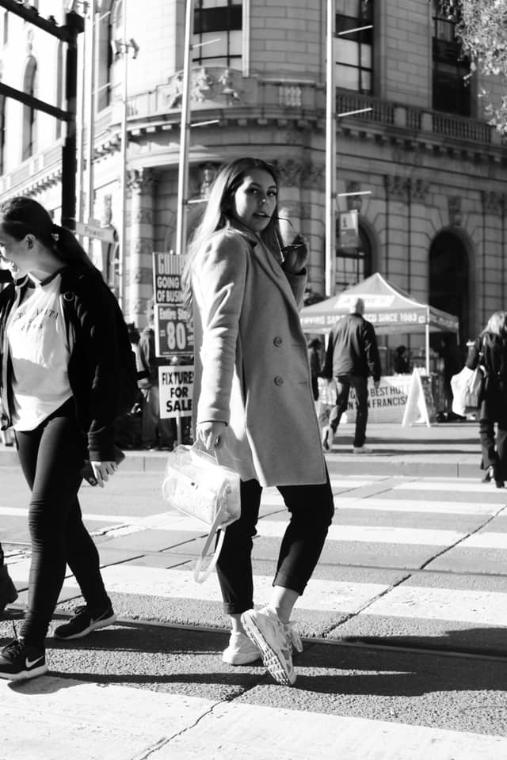
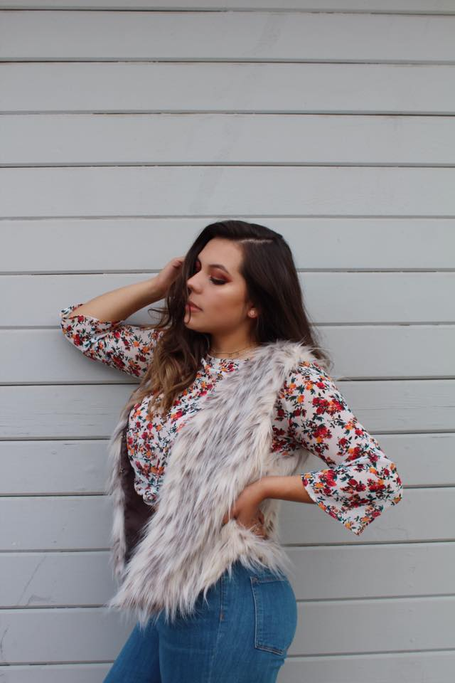
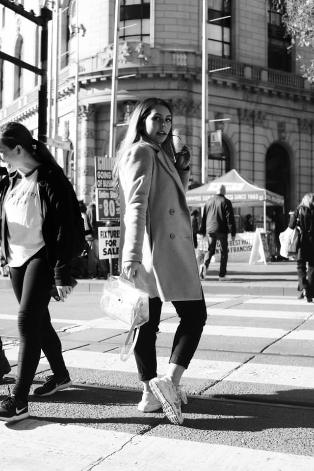
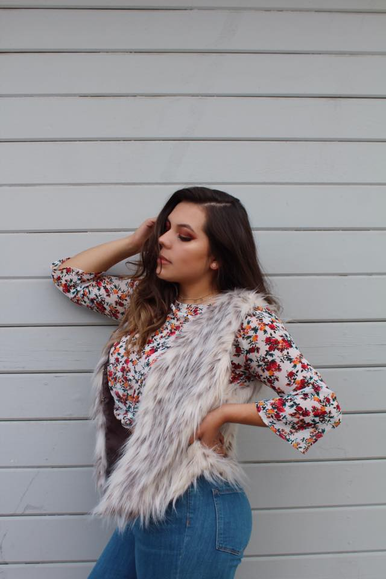
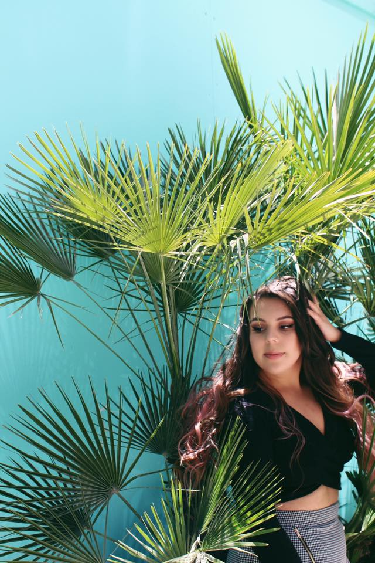
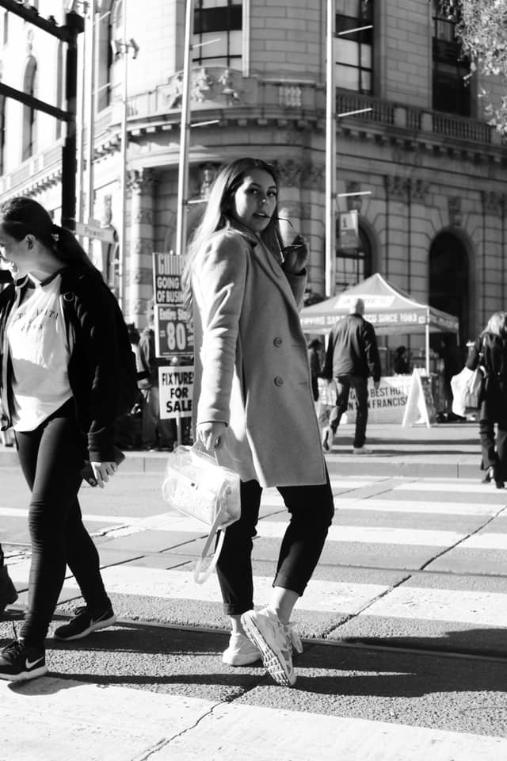
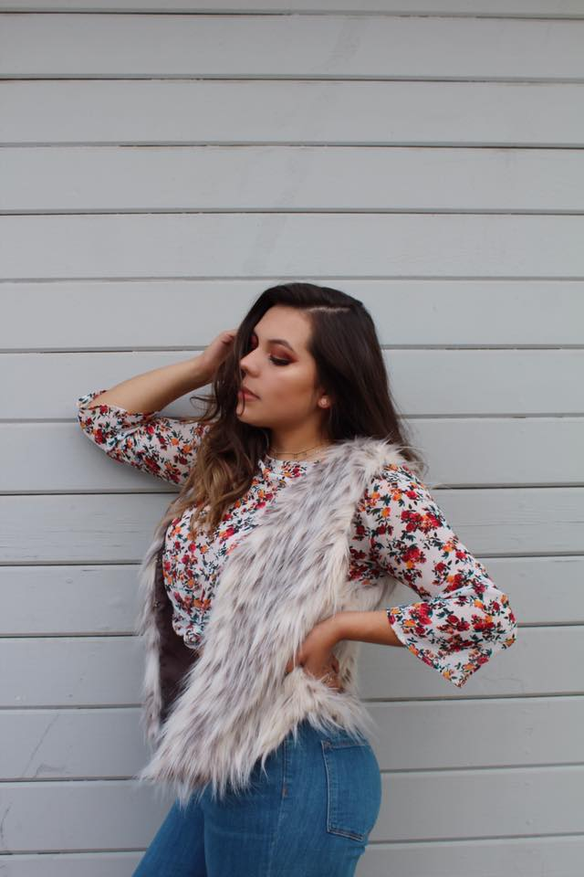

 



My name is Alejandra Romero a 21 year old creative soul who loves to explore the different beauties of the art and design. Born in beautiful Mexico but raised in the great city of the Bay Area, San Francisco. I enjoy filming and creating YouTube videos mainly revolving around fashion and seasonal look books. Photgraphy, painting and drawing are a couple of other hobbies of mine which I truly enjoy.



When it comes to fashion I am a total freak. Look Books are my favorite type of videos to both film and edit. This was my first ever Fall Look Book to film. It was also my first time creating my own remix to the song Closer by the Chainsmokes ft. Halsey using different songs. The song remix was all done by me.